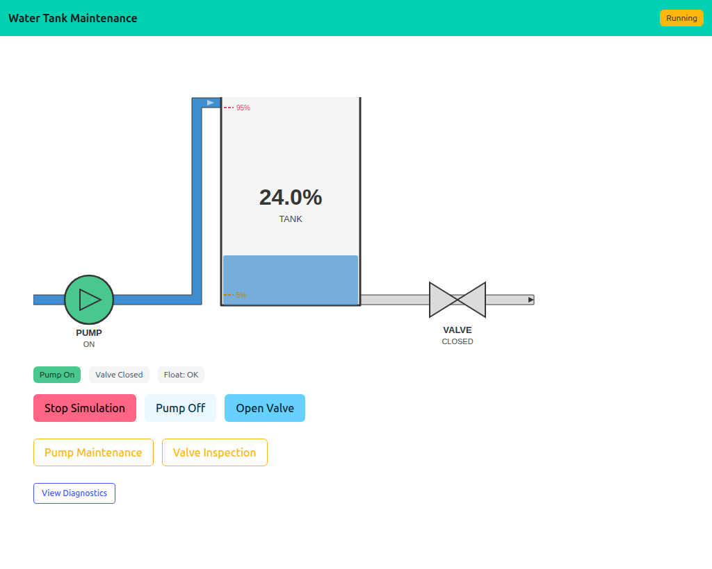
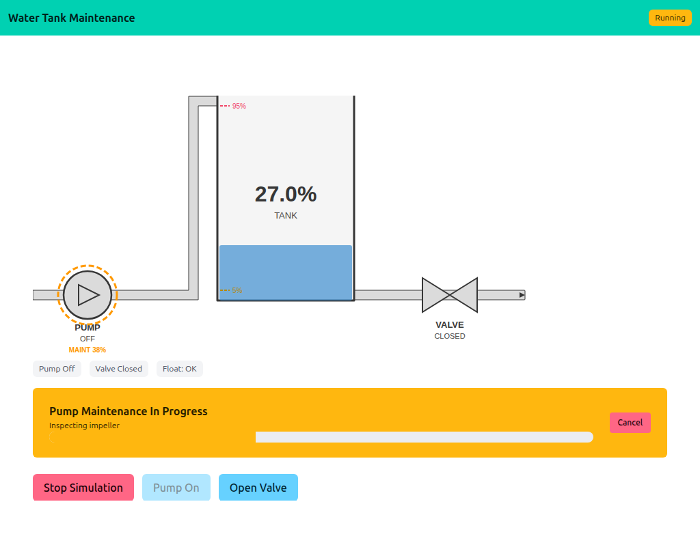

10 — Water Tank Maintenance
Extends 09 with long-running background maintenance goroutines on the pump and valve. Each maintenance op runs N steps × 1 s, updating progress under a mutex; HTMX picks up the progress on its existing 1 s poll. Cancellation is via context.Context. While maintenance is running, the affected equipment is locked out — buttons disabled, float-switch suppressed, an orange dashed ring drawn on the schematic.
Interactivity level: 5 — HTMX partial updates (with background ops) State scope: Global (server build) / Individual (WASM build — each browser runs its own maintenance ops)


State.MaintType / State.MaintProgress. The Pump On button is disabled (lockout); the float-switch stops auto-toggling the pump too.
The maintenance goroutine
runMaintenance walks a list of steps, sleeping 1 s between each. At every step it records progress and a log line under the simulation mutex, then selects on cancellation:
func (s *Simulation) runMaintenance(ctx context.Context, kind string) {
steps := stepsFor(kind)
for i, step := range steps {
select {
case <-ctx.Done():
s.mu.Lock()
s.maintStatus = "cancelled"
s.mu.Unlock()
return
case <-time.After(1 * time.Second):
s.mu.Lock()
s.maintProgress = float64(i+1) / float64(len(steps)) * 100
s.appendLog(step)
s.mu.Unlock()
}
}
// … set status = "completed"
}
StartMaintenance rejects a second concurrent op with an error; CancelMaintenance calls the context's cancel(), which the select above picks up.
Equipment lockout
TogglePump/ToggleValve early-return when their equipment is under maintenance. The float-switch logic is suppressed for the same equipment — water can rise past 95% during a pump maintenance window without the pump auto-shutting (because it's already off and locked out).
The schematic reflects all this without adding any rendering code in the example: Snapshot() just sets MaintType/MaintProgress on the watertank.State, and the widget draws the orange ring and MAINT n% label.
Cancellation, end to end
Three independent context.Contexts are at play:
- The HTTP request context (
r.Context()) — auto-cancelled when the client disconnects. - The simulation tick goroutine — cancelled by
Stop(). - The maintenance goroutine — cancelled by
CancelMaintenance()or by stopping the simulation.
All three terminate cleanly via select { case <-ctx.Done(): ... }. There's no shared "I'm done" flag; the context tree is the single source of truth.
Running
task go-example:10 # server on :1349
task docs:capture:10 # capture the two screenshots above